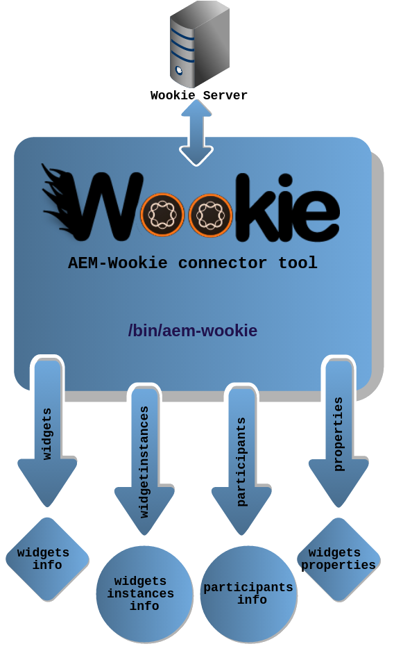
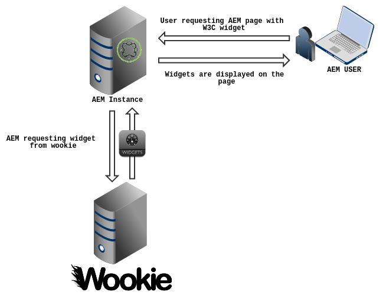
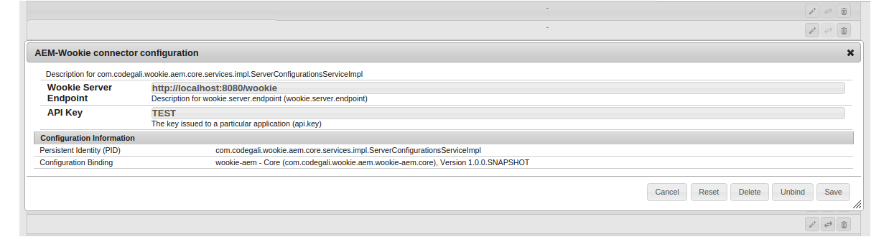
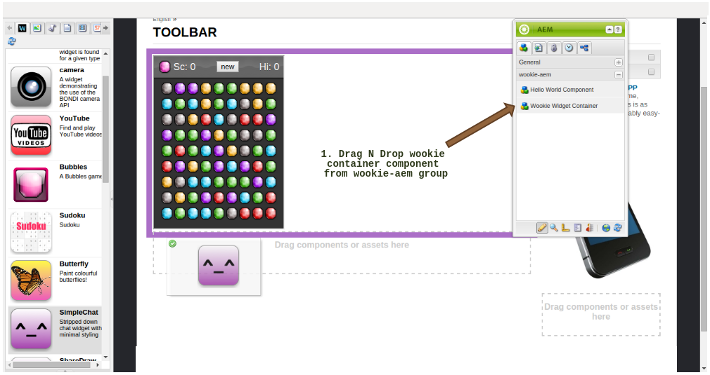
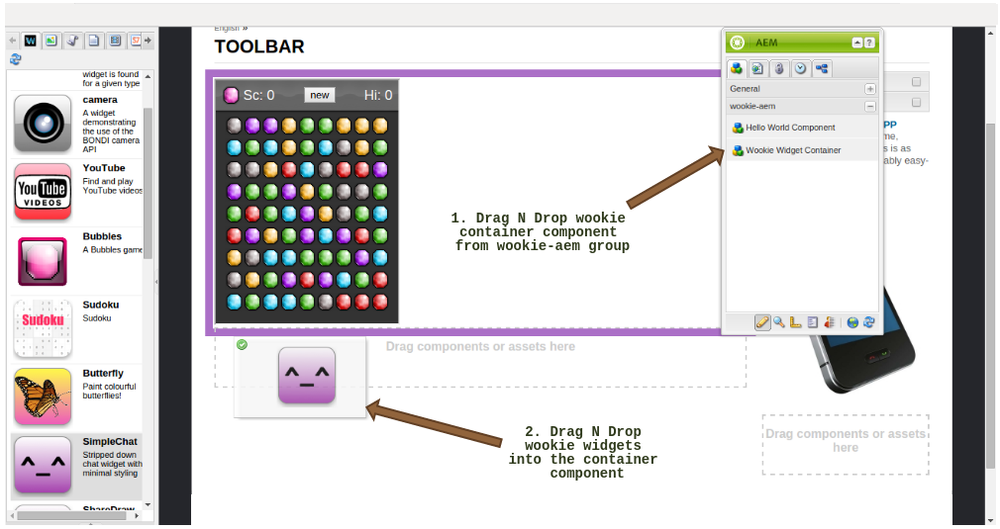

AEM-Wookie Connector Tool
Created by Ankit Gubrani / @ankitgubrani90
Introduction to Apache Wookie
- A Java server application for uploading and deploying ‘widgets’
- A widget container
- Wookie News
- Project started at the University of Bolton, but was proposed and accepted as an incubator project by the Apache Software Foundation(ASF) in July 2009
- Latest version - 1.0.0
AEM-Wookie Connector Tool
AEM-Wookie Connector Tool - Approach
AEM-Wookie Connector Tool - Installation
- Clone the AEM-Wookie Connector tool from AEM-Wookie Connector Tool Github
- Build and Deploy
- mvn clean install -PautoInstallPackage
- Start Using!
AEM-Wookie Connector Tool - Configuration
AEM-Wookie Connector Tool - Usage
AEM-Wookie Connector Tool - Usage
Thank You
Contact Us :
LinkedIn : Ankit Gubrani / Rima Mittal
Twitter : @ankitgubrani90 / @rimamittal
Email-ID : ankit.gubrani90@gmail.com / rimamittal@gmail.com
Blog : codebrains.blogspot.in / rimamittal.blogspot.in